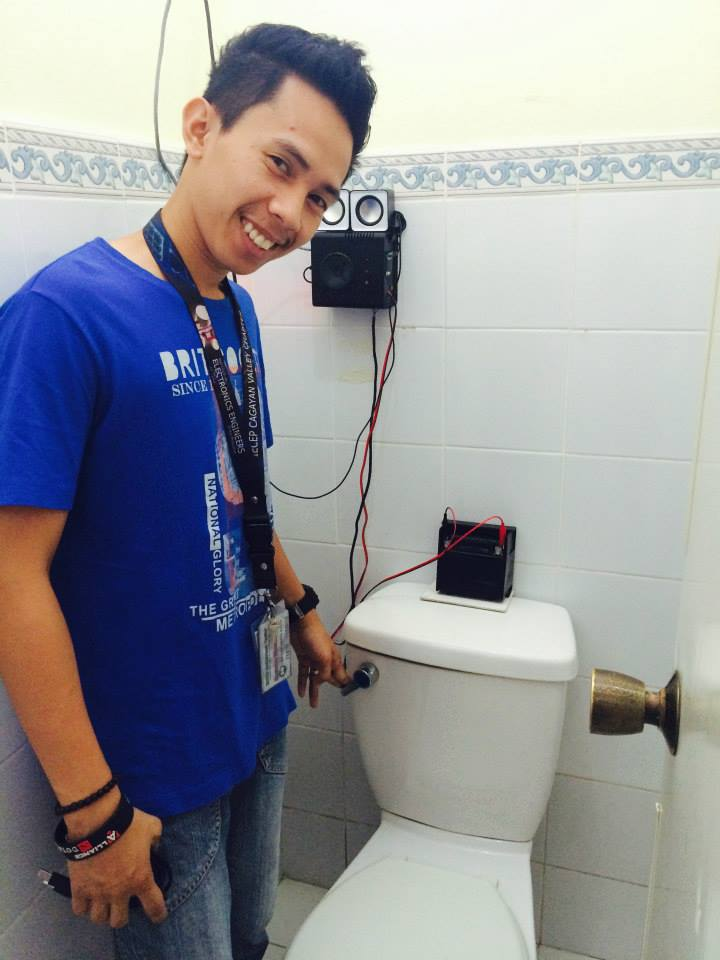
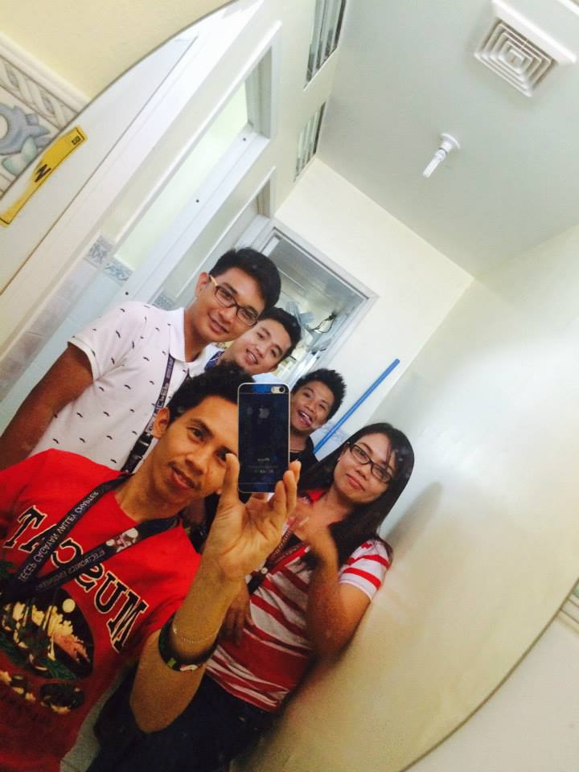
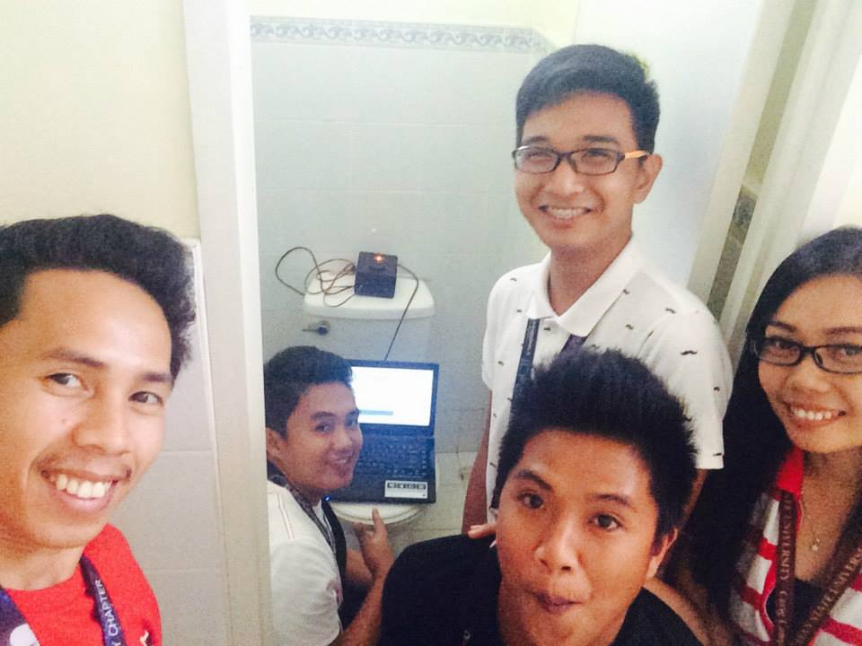
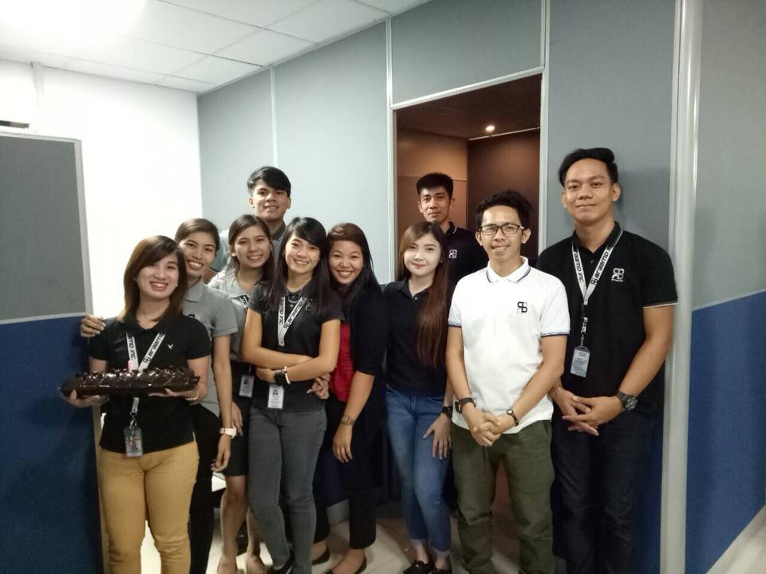
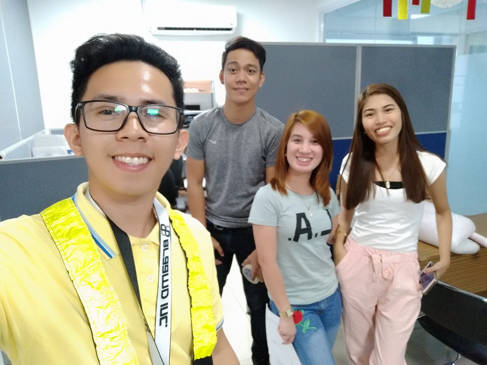
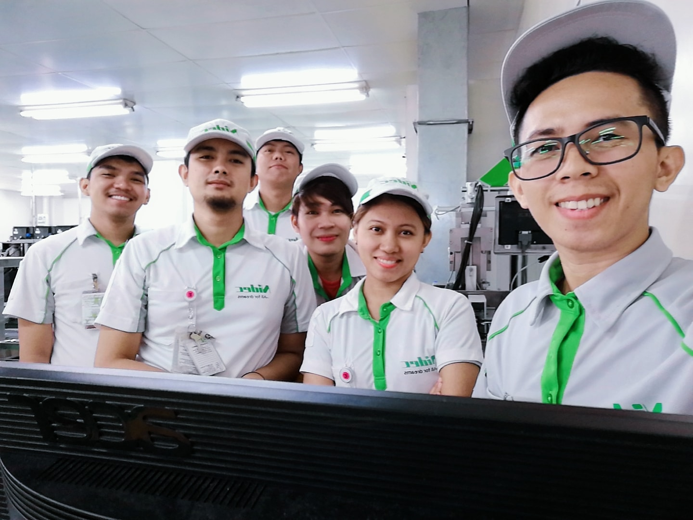
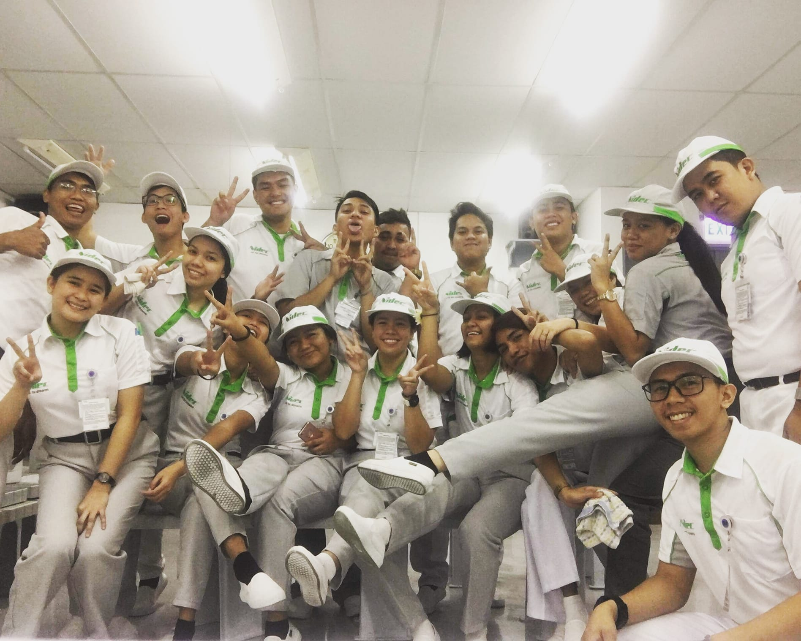
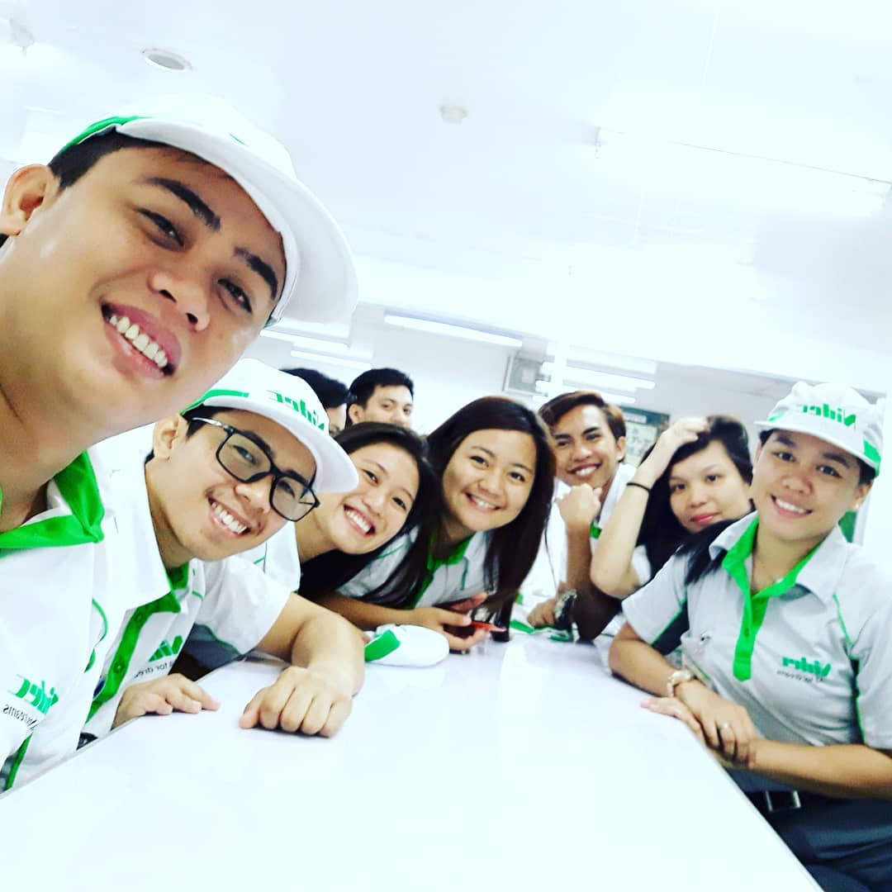

Bitstop Experiences
  Overview: Designed Project is Water Level Indicator with Alarm System and Remote Monitoring Statement of the Problem: Water Tanks of toilets having problem of continous flow because the floatswitch is defective resulting to water is being wasted.
BRAAMD Experiences
 Job Description: Evaluating Customer requirement, Product Presentation, Installation and Commisioning of projects, Outsourcing
NIDEC Experiences
  Job Description: Manpower Management, Projects Management, Technical reports and Documents, Troubleshooting and Assembly improvements of machines, Machines Handled: Auto Vision Machine, Datagauge Machines pneumatics, electric actuators, electrical and mechanical assembly.